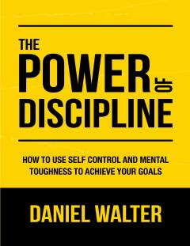

TPO'z-o'zini intizom qilish va maqsadlarga erishish bo'yicha amaliy qo'llanma.
Ushbu kitob o'z-o'zini nazorat qilish va ruhiy chidamlilikni oshirish orqali hayotiy maqsadlarga erishish yo'llarini o'rgatadi. Muallif odatlarni o'zgartirish, intizomni shakllantirish va muvaffaqiyatga erishish uchun amaliy tavsiyalar beradi.